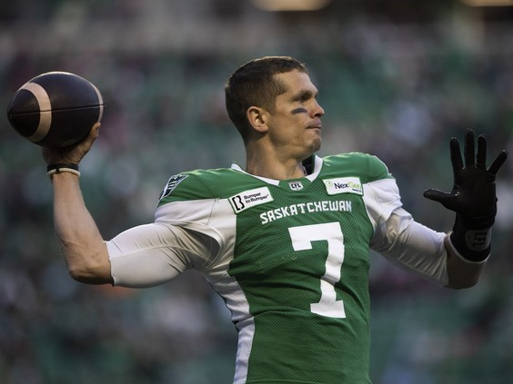
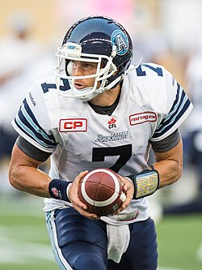
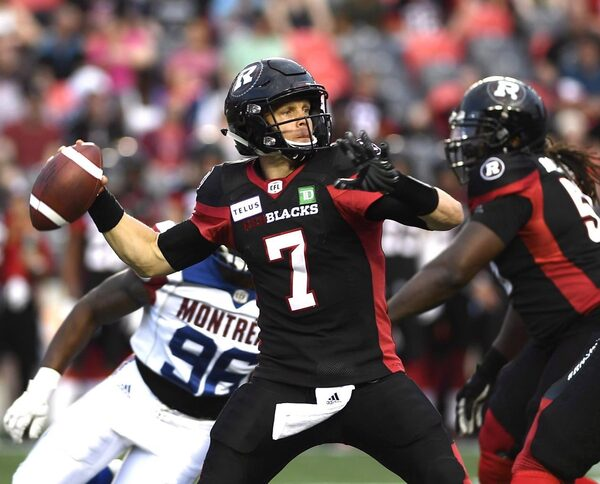
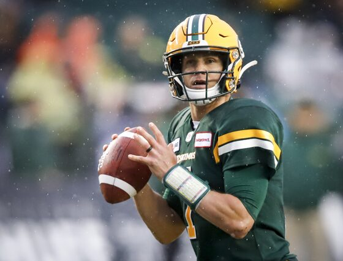
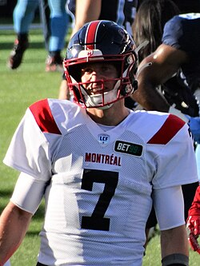
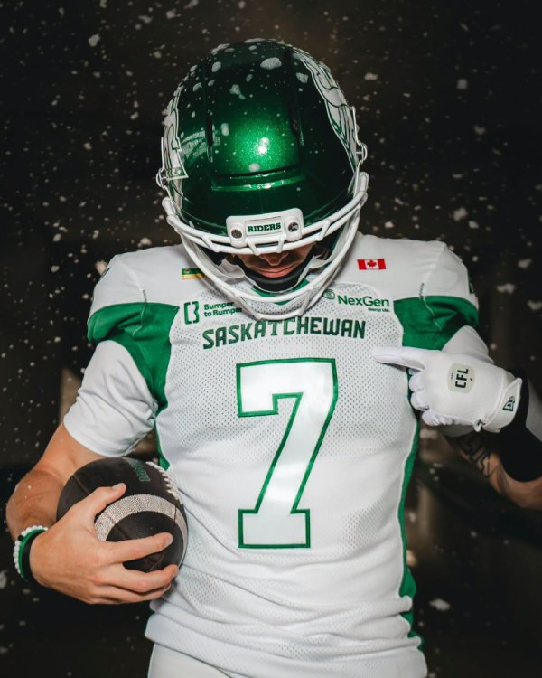
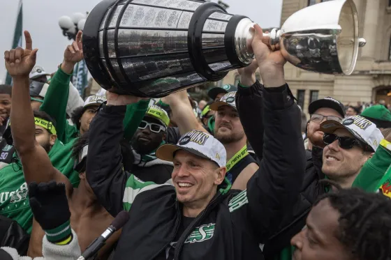

The Decorated Veteran

Trevor Harris (40 years old, 6'3, 212 lbs) is currently the starting quarterback for the Saskatchewan Roughriders of the CFL (Canadian Football League)

Harris began his CFL career in 2012 with the Toronto Argonauts, where he backed up Ricky Ray and Zach Collaros for a handful of seasons before an injury to Ray allowed Harris to start the first 16 games of the season, in which the team posted a 9-7 record.
After his time with Toronto, he signed with the Ottawa Redblacks as a backup to veteran Henry Burris for the 2016 season. Harris would end up starting 10/18 games that season, as both he and Burris battled injuries throughout the season.
Harris was officially named QB1 for the first time in his career after Henry Burris announced his retirement in January 2017, and he firmly established himself as one of the league's best, posting what at the time were his career highs in both yards and touchdown passes despite missing 3 games, and leading the Redblacks to the playoffs.
Harris only improved in 2018, throwing for another career high in yards, a mark that still stands today. He led Ottawa back to the playoffs and made it all the way to the Grey Cup, ultimately losing to the Calgary Stampeders.

After the 2018 season, Harris signed with the Edmonton Eskimos (as they were called at the time) and posted another solid season, leading Edmonton to the playoffs and winning a playoff game, before losing to the Hamilton Tiger-Cats in the Eastern Final.
After the 2020 season was lost to the COVID-19 pandemic, Harris and the now Edmonton Elks returned to the field in 2021, and it was a disappointment to say the least. Harris was injured just 4 weeks into the season, and after playing poorly after returning, was traded to the Montreal Alouettes. He would start the last 4 games of Montreal's season, ultimately losing in the playoffs to Hamilton.
Harris was released but subsequently re-signed by Montreal for the 2022 season, where he would be named the starter just 2 weeks into the season. As he always does, Harris posted another nice season and led Montreal back to the playoffs, where they won a playoff game before losing to Toronto in the Eastern Final.




Harris would not re-sign with Montreal this time, and in 2023 he signed with the Saskatchewan Roughriders, where he has stayed ever since. The 2023 season was nothing short of a disaster, as Harris suffered a season ending injury just 6 weeks into the season. There was speculation that he could return for a playoff game, but with Saskatchewan ultimately out of playoff contention, he would remain sidelined until 2024.
Harris would suffer a minor knee injury early in 2024, but would return in time to lead Saskatchewan to the playoffs for the first time in 3 years, where they eventually lost to the Winnipeg Blue Bombers in the Western Final.
Harris played all but 2 games in 2025, with the Roughriders posting a league best 12-6 record and being awarded a bye week and the right to host the Western Final. Saskatchewan defeated the BC Lions 24-21 in a dramatic finish, and went on to beat Montreal 25-17 in the 112th Grey Cup the following week.
Currently in 2026, Harris is on pace to record by far the best statistsical season of his career at age 40 and has the Roughriders currently sitting at an 8-7 record.
My favourite Trevor Harris games happen to all be with the Roughriders: